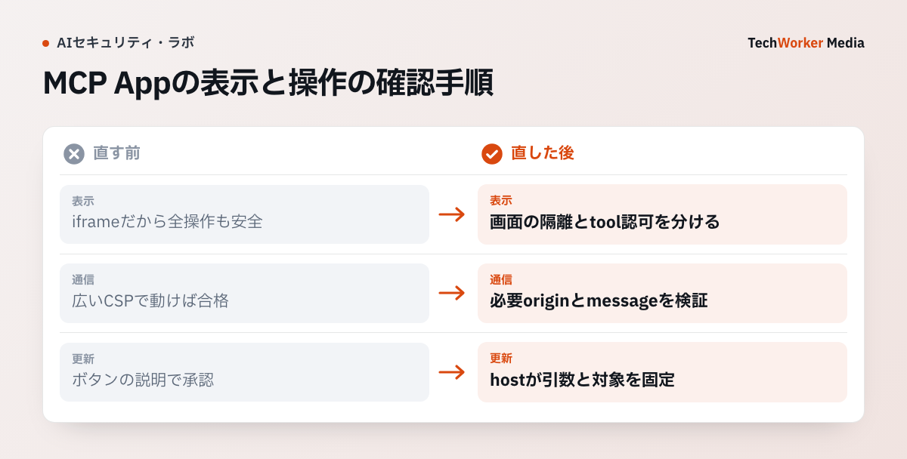

AIとの会話にアプリの画面を表示できるMCP Appsでは、画面を隔離するだけでなく、そこから実行できる操作も制限します。まず、公式仕様が保証する表示領域の境界を確認し、その先の通信とツール権限を分けて設計します。
一次資料：MCP Appsの表示領域の隔離（確認：2026年10月6日）
All Views run in sandboxed iframes with no access to the Host’s DOM, cookies, or storage.
出典：MCP Apps Overview。表示領域は隔離されたiframeで動き、ホスト側の画面構造やCookie、保存領域へ直接アクセスできないと説明されています。

公式構成は通信経路を2本に分けている
公式のMermaid図では、MCPサーバーとホストはMCPプロトコルで、ホストと表示領域はpostMessageでつながります。表示領域がサーバーへ直接つながる図ではありません。ホストが通信と権限の境界になります。
この図はMCP Apps Overviewの構成節で確認できます。独立した画像原本がないため、画面を作り直さず原図へリンクします。
表示領域からMCPホストのDOM・Cookieへ直接触れさせない
表示領域は隔離されたiframeで動かし、ホストのDOM、Cookie、保存領域へ直接届かない状態にします。外部通信先は_meta.ui.cspで宣言し、connectDomainsとresourceDomainsを分けます。
宣言がない外部接続は許可しません。開発用の自端末を本番設定へ残すと、意図しない通信先が増えます。
postMessageは送信元とメッセージ型を検証する
MCPのPostMessageTransportは、受信したevent.sourceが想定画面かを確認するよう求めています。JSON-RPCメッセージの形式検証も必要です。
メソッド名だけで許可せず、セッション、要求ID、ツール名、引数の型を確認します。未知メソッドや古いセッションのメッセージは拒否します。
OAuthトークンを別の対象資源へ使い回さない
MCPサーバーはProtected Resource Metadata（保護対象資源のメタデータ）で自身の対象資源識別子と認可サーバーを示します。MCPクライアントはPKCEを使い、認可要求とトークン要求の両方へ接続先MCPサーバーを示すresourceを入れます。認可サーバーは、その対象資源向けのアクセストークンを発行します。
アクセストークンを受けたMCPサーバーは、自分を対象者として発行されたトークンかを検証し、別の対象資源向けなら拒否します。MCPクライアントは、認可応答にissがある場合、記録した発行者と一致するかも確認します。読取りと書込みの権限範囲を分け、権限不足の再認可を無制限に繰り返しません。
機密入力を会話履歴へ戻さない
2025年6月18日版のElicitation（MCPが利用者へ追加情報を求める仕組み）は、Elicitationで機密情報を求めること自体を禁じていました。URL方式は2025年11月25日版で導入され、2026年7月28日版でもFormとURLの2方式として定義されています。パスワード、APIキー、支払情報はForm方式へ入力させず、URL方式（mode: "url"）でサーバー側のHTTPS画面へ移します。
クライアントは遷移先の完全なURLと理由を表示し、利用者の同意なく開きません。サーバーは開始者と完了者が同一人物だと検証し、取得した第三者認証情報をMCPクライアントへ返しません。
導入時に配布元と更新経路を固定する
MCPサーバーの名前だけでは配布元を確認できません。レジストリの発行者、リポジトリ、パッケージ署名またはダイジェスト値、依存関係、更新権限を記録します。導入時に確認したコミットと実際に実行する配布物を結びます。
自動更新は同じ発行者だからと無条件に通しません。ツール定義、権限範囲、外部通信先が増えた版は再審査し、以前の版へ戻せるようダイジェスト値を保持します。
書込みツールは表示用ツールと分ける
ページ送りや再読込みのようなアプリ内専用ツールと、モデルから呼べるツールを分けます。外部送信やレコード更新は、対象と差分をホスト側で表示し、人の承認後に実行します。
表示領域の表示内容を承認の正本にしません。改ざん可能な画面と、実際にサーバーへ送る引数をホストが照合します。